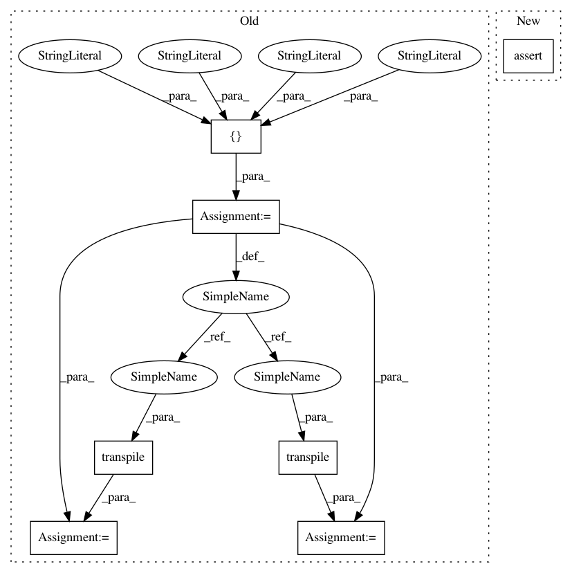

2579ba272272fa31e3c7d2139bbe91dc32b9dc8a,test/aqua/test_amplitude_estimation.py,TestBernoulli,test_iqae_circuits,#TestBernoulli#Any#,231
Before Change
def test_iqae_circuits(self, efficient_circuit):
Test the circuits constructed for IQAE
prob = 0.5
basis_gates = ["u1", "u2", "u3", "cx"]
for k in range(2, 7):
qae = IterativeAmplitudeEstimation(0.01, 0.05, a_factory=BernoulliAFactory(prob))
angle = 2 * np.arcsin(np.sqrt(prob))
// manually set up the inefficient AE circuit
q_objective = QuantumRegister(1, "q")
circuit = QuantumCircuit(q_objective)
// A operator
circuit.ry(angle, q_objective)
if efficient_circuit:
qae.q_factory = BernoulliQFactory(qae.a_factory)
// for power in range(k):
// circuit.ry(2 ** power * angle, q_objective[0])
circuit.ry(2 * 2**k * angle, q_objective[0])
else:
q_factory = QFactory(qae.a_factory, i_objective=0)
for _ in range(2**k):
q_factory.build(circuit, q_objective)
expected_transpiled = transpile(circuit, basis_gates=basis_gates)
actual_circuit = qae.construct_circuit(k, measurement=False)
actual_transpiled = transpile(actual_circuit, basis_gates=basis_gates)
print(actual_transpiled)
print(expected_transpiled)
After Change
actual_unitary = self._unitary.execute(actual_circuit).get_unitary()
diff = np.sum(np.abs(actual_unitary - expected_unitary))
self.assertAlmostEqual(diff, 0)
@parameterized.expand([
[True], [False]
])
In pattern: SUPERPATTERN
Frequency: 3
Non-data size: 7
Instances
Project Name: Qiskit/qiskit-aqua
Commit Name: 2579ba272272fa31e3c7d2139bbe91dc32b9dc8a
Time: 2020-01-26
Author: jules.gacon@googlemail.com
File Name: test/aqua/test_amplitude_estimation.py
Class Name: TestBernoulli
Method Name: test_iqae_circuits
Project Name: Qiskit/qiskit-aqua
Commit Name: 2579ba272272fa31e3c7d2139bbe91dc32b9dc8a
Time: 2020-01-26
Author: jules.gacon@googlemail.com
File Name: test/aqua/test_amplitude_estimation.py
Class Name: TestBernoulli
Method Name: test_mlae_circuits
Project Name: Qiskit/qiskit-aqua
Commit Name: 2579ba272272fa31e3c7d2139bbe91dc32b9dc8a
Time: 2020-01-26
Author: jules.gacon@googlemail.com
File Name: test/aqua/test_amplitude_estimation.py
Class Name: TestBernoulli
Method Name: test_iqae_circuits
Project Name: Qiskit/qiskit-aqua
Commit Name: 2579ba272272fa31e3c7d2139bbe91dc32b9dc8a
Time: 2020-01-26
Author: jules.gacon@googlemail.com
File Name: test/aqua/test_amplitude_estimation.py
Class Name: TestBernoulli
Method Name: test_qae_circuit